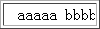
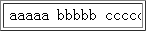

在 W3C HTML 4.01 规范中， "nowrap" 属性已经被废弃。"nowrap" 是作用在 TABLE 单元格元素的属性，这个布尔属性告诉用户端禁用此单元格文本自动换行。应使用 CSS 样式代替此属性。并且注明如果使用不慎，这个属性会导致单元格过大。
在各浏览器中，均把 "nowrap" 特性转换成 CSS 样式 'white-space:nowrap;' ， 'white-space' 该属性声明了元素内的空白是如何处理的。默认值是 'normal' ，该值告诉用户端，合并一系列的空白，在必要的时换行填充行框。 'nowrap' 该值象 'normal' 那样合并空白，但是阻止文本内的换行。
关于 'nowrap' 特性，参见W3C HTML 4.01 中 第11.2.6节
关于 'white-space' 特性，参见W3C CSS 2.1 中 第16.6节
Webkit 浏览器中 TD 的 'noWrap' 属性会引起的它里面未设置 'width' 值的 MARQUEE 元素宽度计算错误。
此问题导致 Webkit 浏览器中 MARQUEE 元素比其他浏览器宽，导致页面布局错误。
| Chrome Safari |
|---|
分析以下代码：
<TABLE border=1 width=100px> <TR > <TD noWrap ><marquee>aaaaa bbbbb
ccccc</marquee></TD> </TR> </TABLE>
这段代码在不同的浏览器环境中的表现：
| IE6 IE7 IE8 Firefox Opera | Chrome Safari |
|---|---|
|  |  |
从上图分析中可以推测，在 Chrome Safari 中原本作用在 TD 上的 "nowrap" 属性似乎作用到了 MARQUEE 元素上，使 MARQUEE 元素内容不换行，撑大了 TD ，最终撑大了 TABLE 。
其他浏览器不存在此问题， MARQUEE 元素没有撑大 TD 。
| 操作系统版本: | Windows 7 Ultimate build 7600 |
|---|---|
| 浏览器版本: |
IE6
IE7 IE8 Firefox 3.6 Chrome 4.0.302.3 dev Safari 4.0.4 Opera 10.60 |
| 测试页面: | BX1016.html |
| 本文更新时间: | 2010-07-30 |
nowrap white-space MARQUEE